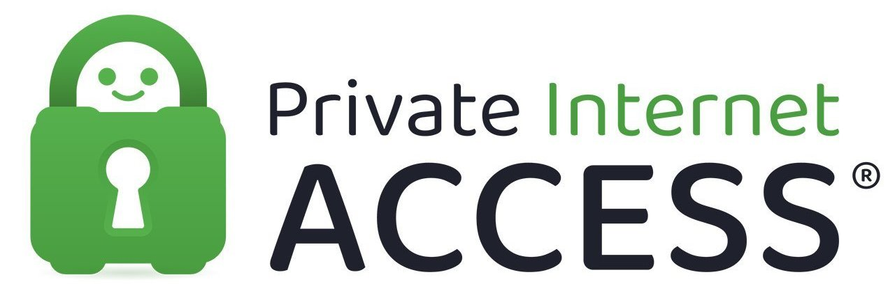
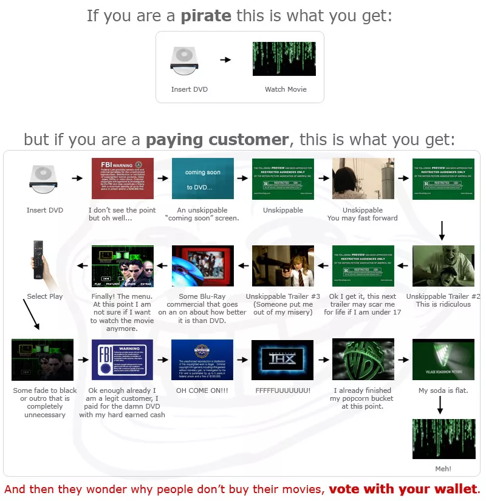

Torrent with a VPN - Definitive Guide
All Webpages made by LiamBox are for educational purposes only.
You can always send me feedback by clicking this link.
All links open a new tab so you don't have to middle click every link.
- - - - - - - - - - - - - - - - - - - - - - - - - - -
Chapters
- Introducing Piracy.
- Torrenting And Torrent Clients.
- Virtual Private Networks (VPNs).
- Best Operating Systems, Torrent Clients and VPNs.
- Ensure Torrent Client Is Linked With VPN.
- Get started with piracy (some are Direct Downloads).
- - - - - - - - - - - - - - - - - - - - - - - - - - -
Piracy...A convenient way to obtain media that:
- You cannot afford/do not want to pay.
- Is no longer convenient to obtain it legaly.
- The copyright holder does not legaly distribute it anymore.
- Improves the experience for the consumer with DRM free software.
- - - - - - - - - - - - - - - - - - - - - - - - - - -
Is Piracy Lawfully Correct?
Is Piracy Morally Correct?
Depends on what you find morally correct.
- - - - - - - - - - - - - - - - - - - - - - - - - - -
So what is a Torrent Client?
A torrent Client is software used to dowloand and distribute content by using the Bitorrent protocol, the most used peer-to-peer (P2P) file sharing protocol. This type of dowloading and uploading is very effective, as files are shared with other peoples computers and smartphones and cannot be shutdown by goverments, copyright holders and even your family, unless all computers are powered off, kinda like becoming puzzle piece of a decentralised server, as long as there are people who are willing to seed, there is always someone for replacement.

Is Torrenting Legal?
Yes, but keep in mind doing any of these activities with copyrighted content is illegal and will get you in trouble, there is a service you will need to not be in trouble.
Is Torrenting Safe?
Yes, music and videos files do no harm, as long as you don't install any cracked software to your computer, then you will be fine.
Cracked software can have ransomware that encrypts your files until you pay with your money or forever, crypto miners that will use your resources to make a profit of your computer, or become part of a botnet that may be used in DDOS attacks without your knowledge.
**WARNING: Install cracked software at your own risk!**
Torrent Terms
- Peerer: Is downloading the file.
- Seeder: Is sharing the file to the peeres.
- Leecher: Is downloading the file but never shares.
- Swarm: Group of people downloading and sharing a file.
- Tracker: Server that tracks connected users in a torrent.
- - - - - - - - - - - - - - - - - - - - - - - - - - -
And what is a VPN?
short for "Virtual Private Network", it's a service and software that hides your IP address and makes you virtually untraceable from your Internet Service Provider (ISP), Goverment and Copyright Trolls. This is because all actions and connections are made in the VPN and are encrypted, So nobody expect your VPN provider can see what you are doing.

Most VPN providers do not keep logs for the purpose of the service, even if 3rd parties requested customer data, they most likely won't be able to find anything that leads to your IP address of origin.
Are VPNs Legal and Safe?
VPNs have always been used by corporations and businesses for legitimate means.
What if I don't use a VPN ?
What do you think will happen when the copyright troll gets your IP address while torrenting (Seeding & Peering)? That's right! they get in contact with your ISP and send a nice DMCA letter telling you to stop torrenting, sometimes it can go as far as getting theatened to pay a "fine" that doesn't exist and a lawsuit against you after paying for the fine or admiting guilt (You should probably never do this)

- - - - - - - - - - - - - - - - - - - - - - - - - - -
Meme Time!
Your IP Address is:
Confirm your IP Address Details at whatismyipaddress.com

If this IP Address is different compared to the one at your house, then congratulations! I got the wrong IP address.
- - - - - - - - - - - - - - - - - - - - - - - - - - -
Best Operating System?
GNU/Linux distributions based on Debian (Arch also works)


Alternatives?


If your torrent client dissapears, it most likely got purged by your antivirus, make sure it is always turned off.
- - - - - - - - - - - - - - - - - - - - - - - - - - -
Best Torrent Client?
Uses the Bitorrent Network, Guide to link qBitorrent with your VPN.

Alternatives?


- - - - - - - - - - - - - - - - - - - - - - - - - - -
Best VPNs?
These VPNs state that they do not keep logs, Mullvad VPN is a great example of this.


Alternatives?

- - - - - - - - - - - - - - - - - - - - - - - - - - -
How to Ensure Your Torrent Client Is Linked With Your VPN (qBitorrent)
Chapter 1 - Primary Device
- In your primary device, turn on your VPN
- Visit ipleak.net
- Scroll down and find "Torrent Address Detection"
- Click “Activate”
- Click “this Magnet Link”
- Choose your Torrent Client
- Click “Open Link”
- Torrent client opens a setup download window. Just click “OK” for now, as you are not dowloading a file that should go inside a “Torrents” or “qBitorrent” folder
- Go back to your browser and wait 10 seconds
- Check your "Torrent Address" is the same as"Your IP Addresses", at least one of those should be the same (IPv4 and/or IPv6)
Chapter 2 - Secondary Device
- Turn on your smartphone or another computer
- Connect your secondary device to your Network by Wi-Fi or Ethernet
- Disable any VPN connections you have on your secondary device
- Visit DuckDuckGo
- type “ip address” in the search bar
- Confirm your device's IP address is different from your computer's IP address
- You are finished! If not, go to step 8
- If this is false or both devices have the same IP address, check your main device's VPN app status.
- - - - - - - - - - - - - - - - - - - - - - - - - - -
Getting Started with Piracy? Here
Approved by Redditors - r/Piracy MegaThread
Anything - The Pirate Bay
Movies - YTS
ROMs and Emulation - Vimms Lair
BIOS files for Emulation - Retroarch System
Japanese Content - The Index
Curated list of piracy links - Awesome Piracy
- - - - - - - - - - - - - - - - - - - - - - - - - - -
Websites To Prove You Are Torrenting Safely
IP Leak - Torrent Address Detection
Mullvad - Connection Check
- - - - - - - - - - - - - - - - - - - - - - - - - - -
Miscellaneous
- - - - - - - - - - - - - - - - - - - - - - - - - - -
Piracy Memes!
